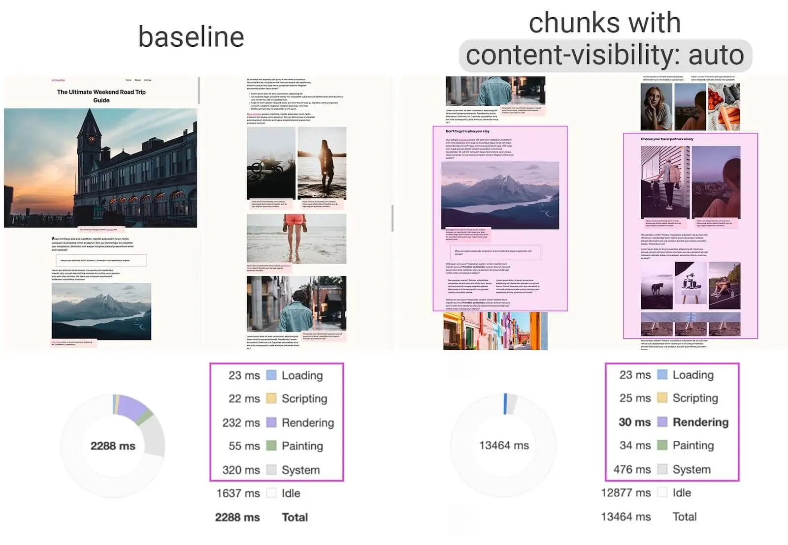

Short answer
A long page can defer painting work for later sections without removing those sections from the HTML.
Content-visibility and similar techniques tell the browser it may skip layout for off-screen chunks. That is a rendering performance choice. It is not a reason to load the next product range only when a script notices a scroll. SEO Health still asks whether the HTML contains the text and the links.
Definition
The illustration of a long page broken into sections is about containing work, not about infinite scroll. A specification chapter below the fold can stay in the document and still be cheaper to lay out. If the chapter is absent from the HTML until an intersection observer fires, a crawler may never request it. Those are different mechanisms and should not share one sentence in the audit.
What rendering changes for a crawler
Confirm later sections are in the initial HTML even if their layout work is deferred.
A template that uses a rendering hint and also keeps real headings and tables in the response is in a different health state from a template that fetches each chapter from an API as the user scrolls. The first can be a performance note. The second is a crawl-path note. Sample both with and without JavaScript if you are unsure which one you shipped.

What to check
- Whether off-screen sections exist in the first HTML response
- Whether links to those sections are anchor elements
- That a rendering hint was not used as a substitute for pagination URLs
- A sample long URL checked with and without script
- Separate notes for layout cost and for missing HTML
A practical example
A machinery manual is twenty sections in one URL. The team adds a rendering containment so off-screen tables do not all lay out at once. The HTML still includes every section. The health check passes the “is the text in the document” question and can separately note layout cost. Replacing the sections with scroll-loaded fragments would fail the first question.
What this does not claim
Deferring layout work does not guarantee rankings or citations.
Where Mika Visibility files this
Mika Visibility treats rendering as an SEO Health question: can the important HTML be fetched and compared with and without JavaScript when the template depends on it. That comparison is not a GEO audit and not a market-coverage plan. Findings stay attached to sample URLs. A re-audit after the template change is how the team checks the repair.
The figure shows a long page divided into chunks so containment is not confused with missing HTML.
FAQ
Can a long page defer layout without deleting HTML?
A long page can defer painting work for later sections without removing those sections from the HTML.
What must still be true of later sections?
Confirm later sections are in the initial HTML even if their layout work is deferred.
Does deferred layout guarantee rankings?
Deferring layout work does not guarantee rankings or citations.
Next step
Run a structured SEO + GEO audit to see health findings, growth gaps, and a blueprint you can act on.
Clearer entities, answers, evidence, and context make pages easier to understand and reference. Results in any answer product are not guaranteed.